Природа
Поднебесной
"В жизни не перестаешь любить четыре вещи: голубые горы, старых друзей, книги в библиотеке и красивые цветы"
Лу Шаоянь
"В жизни не перестаешь любить четыре вещи: голубые горы, старых друзей, книги в библиотеке и красивые цветы"
Лу Шаоянь
| Чжанцзяцзе | Цзючжайгоу | Тайшань |
|
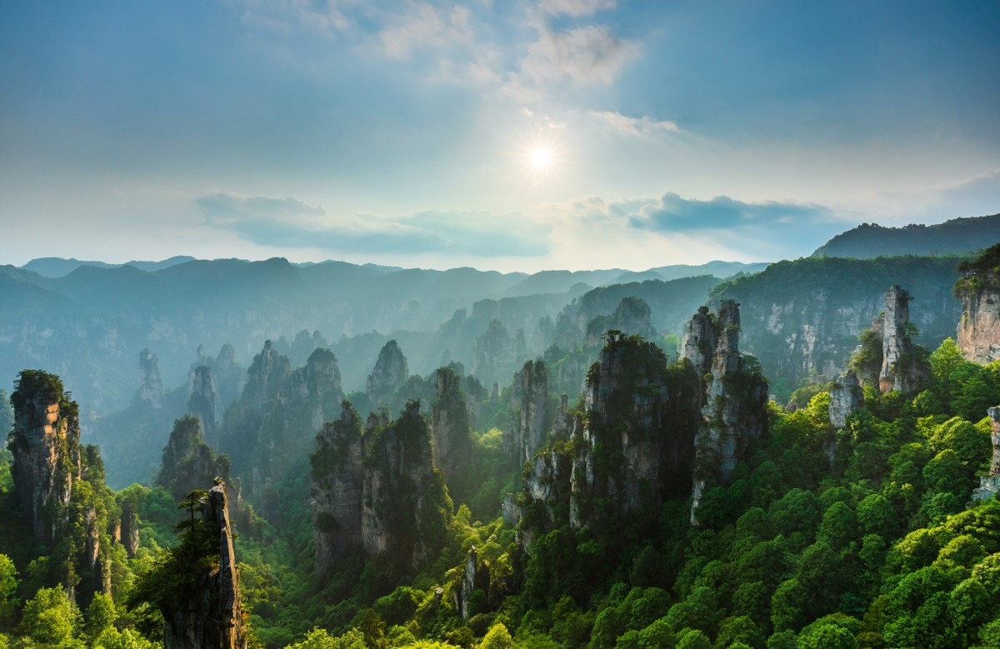
Чжанцзяцзе — национальный лесной парк
в городском округе Чжанцзяцзе, провинция Хунань, Китай.
Парк расположен на живописной территории Улинъюань, признанной ЮНЕСКО
объектом Всемирного наследия. Площадь парка — 479,15 км².
Парк примечателен большим количеством пиков-столбов из песчаника и кварца.
В густых лесах парка растут 720 видов растений.
|
Цзючжайгоу (Jiuzhaigou, 九寨沟), что в переводе с китайского означает
"Долина девяти деревень", – это удивительное место, расположенное в провинции Сычуань,
Китай. Это национальный парк, биосферный заповедник ЮНЕСКО и одно из самых живописных
мест на планете. Знаменит озерами невероятной чистоты и ярких цветов,
многоцветными лесами, живописными водопадами.
|
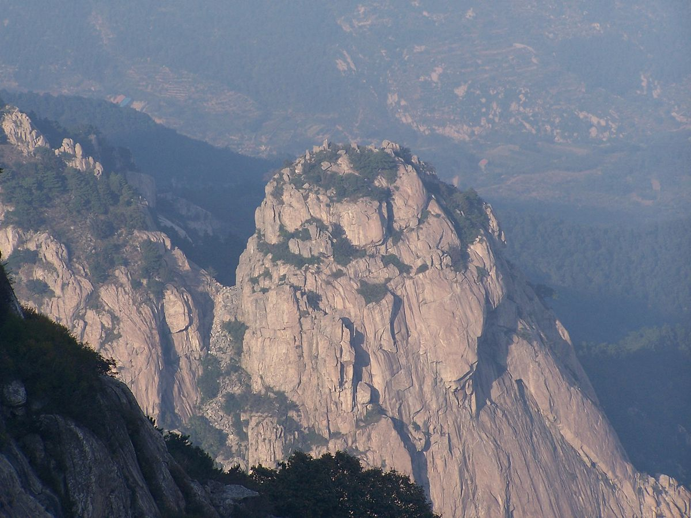
Тайшань — гора в китайской провинции Шаньдун высотой 1545 метров.
Обладает культурной и исторической значимостью и входит в число пяти священных гор даосизма.
Традиционно гора считалась местом обитания даосских святых и бессмертных.В Китае
Тайшань ассоциируется с восходом солнца, рождением, обновлением. С 1987 года гора
Тайшань причислена ко Всемирному Наследию ЮНЕСКО.
|
| Эмэйшань | хуанлун | Шуантай‑Хэкоу |
|
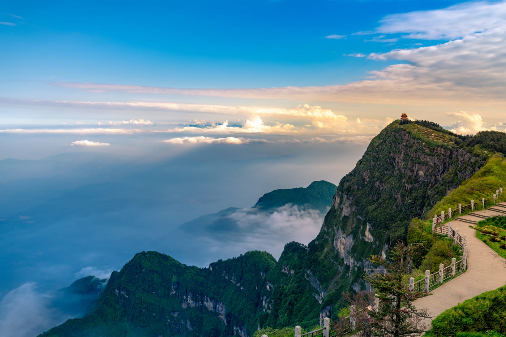
Эмэйшань — гора в провинции Сычуань в Китае.
Наибольшая высота (пик Ваньфодин) — 3099 м над уровнем моря.
Вокруг горы расположен одноимённый национальный парк (площадь 154 км²).
Здесь насчитывается 3200 видов растений (более 100 эндемичных)
и 2300 видов животных. Эмэйшань входит в число четырёх священных гор буддизма.
Близ неё, по данным китайских летописей, во второй половине I века возник
первый в Китае буддийский храм.
Объект паломничества и туризма.
Особенно популярен маршрут от храма Баогосы вверх через 9999 ступеней до
вершины с позолоченной бронзовой статуей бодхисаттвы Пусянь на слоне.
В 1996 году ЮНЕСКО присвоило району Эмэйшань статус Всемирного культурного наследия.
|
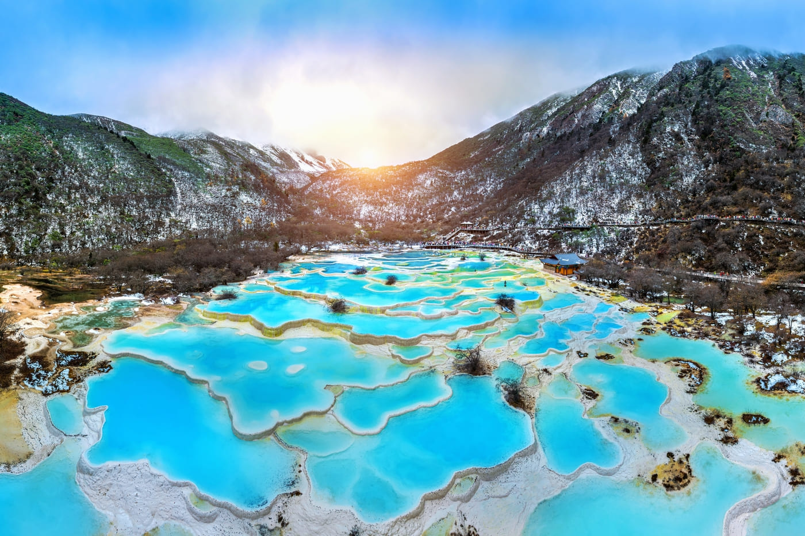
Хуанлун — живописная заповедная местность в высокогорье на северо-западе провинции
Сычуань, примерно в 200 км к северу от города Чэнду. Известна травертиновыми
террасами и многочисленными озёрами различных цветов и форм.Горная гряда
протяжённостью 3,6 километра по своей форме напоминает извивающегося дракона,
отсюда и название заповедника — Хуанлун («жёлтый дракон»).В заповеднике обитает
ряд редких животных, таких как гигантская панда и золотистая курносая обезьяна.
Включена в список Всемирного наследия ЮНЕСКО в 1992 году.В молочно-белых
травертиновых «чашах» вода переливается всеми цветами радуги,
в зависимости от слоя отложений на дне, растущих здесь водорослей,
игры света и тени.
|
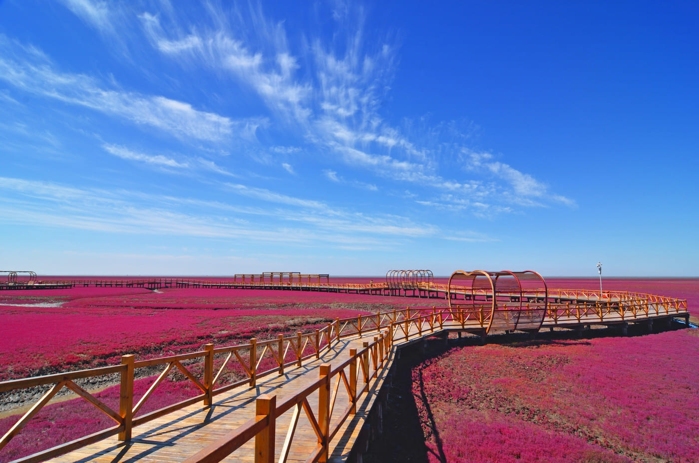
Шуантай-Хэкоу — национальный заповедник в дельте реки Ляохэ на северо-востоке Китая.
Находится близ городов Паньшань и Инкоу, его площадь составляет 600 тысяч гектаров.
Главная достопримечательность — красный пляж. Необычным ярким цветом побережье обязано
морским водорослям, которые отмирают в первые недели сентября, окрашивая дельту реки
Ляохэ в сочные тона. Лучшее время для посещения Шуантай-Хэкоу — первые две недели
сентября. Только в этот период берег пестрит ярко-красными оттенками.
Заповедник также известен как одно из лучших в северном Китае мест для наблюдения за
десятками видов птиц, в том числе за японскими журавлями, находящимися под угрозой
вымирания и включёнными в Международную Красную книгу.
|
| хуаншань | Тянь-шань | Рисовые террасы |
|
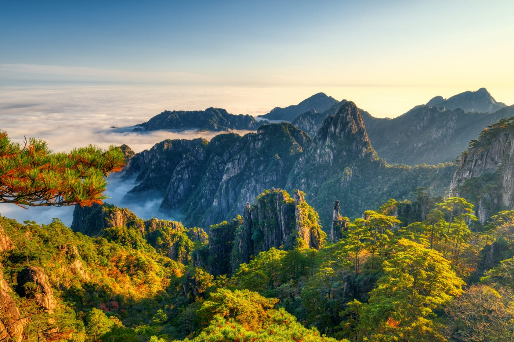
Хуаншань (буквально: «Жёлтые горы») — горная гряда в провинции Аньхой в восточной
части Китая. Расположена примерно в 300 километрах на юго-запад от Шанхая.
Район известен гранитными скалами, покрытыми соснами, воспетыми китайскими
художниками и поэтами со времён династии Цинь.
Современное название (Жёлтые горы) им было дано поэтом Ли Бо в 747 году.
Высота 77 вершин в этой гряде превышает 1000 метров. Три самых высоких пика:
Пик Лотоса (Ляньхуафэн, 1,864 м), Пик Света (Гуаньминдин, 1,840 м) и Пик
Небесной Столицы (Тяньдуфэн, 1,829 м).
С 1990 года район Хуаншань входит в список Всемирного наследия ЮНЕСКО
и является национальным парком КНР, одним из самых популярных туристических
мест Китая.
|
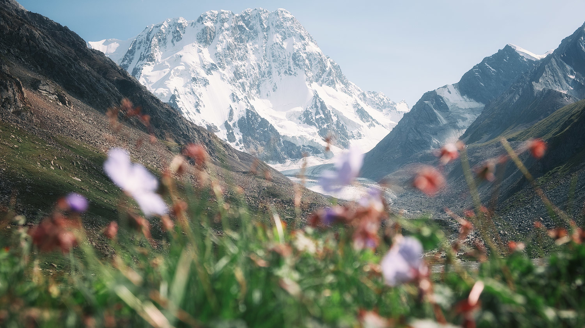
Тянь-Шань — одна из крупнейших горных цепей на планете, которая расположена
в Центральной Азии. Она проходит через пять государств: Китай, Кыргызстан,
Казахстан, Таджикистан и Узбекистан. Протяжённость горной системы составляет
около 2500 километров, а ширина — 400 километров. Наивысшей точкой считается
Пик Победы (7439 метров). Следующий по высоте — пирамидальный пик Хан-Тенгри
(6995 метров). Рельеф в основном высокогорный, с ледниковыми осыпями. На высоте
более 3200 метров начинается многолетняя мерзлота. Всего в цепи находится
свыше 7000 ледников. Часть цепи, именуемая Западным Тянь-Шанем, входит в
список объектов Всемирного наследия ЮНЕСКО.
|
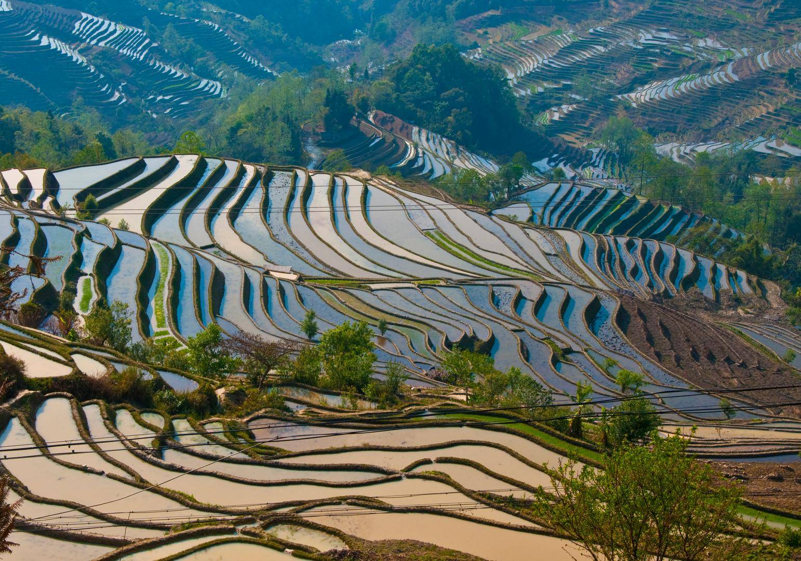
Рисовые террасы в Китае — это чудо инженерии, которое возникло ещё в XIII столетии.
Целые поколения крестьян вручную вырезали многоярусные ступенчатые террасы на крутых
склонах. Одна из самых известных систем террас для выращивания риса расположена на
берегу реки Юаньцзян в Хунхэ-Хани-Ийском автономном округе провинции Юньнань.
Рисовые поля в этом регионе с очень влажным климатом, идеально подходящим для
выращивания этой культуры, занимают площадь около 126 кв. км. Ещё одна знаменитая
область рисовых террас — Лунцзи в уезде Луншэн. Они занимают площадь в 66 кв. км
и находятся на высоте от 300 до 1100 м над уровнем моря. Здесь строительство
террас началось во время правления династии Юань в XIII веке. В разное время
года террасы выглядят по-разному. Зимой склоны засыпаны снегом, весной террасы
залиты водой, летом на них зеленеет рис, который осенью приобретает золотистый
оттенок. Рисовые террасы Хунхэ-Хани в провинции Юньнань являются объектом Всемирного
наследия ЮНЕСКО.
|
| Дунчуань | Такла-макан | Шилинь |
|
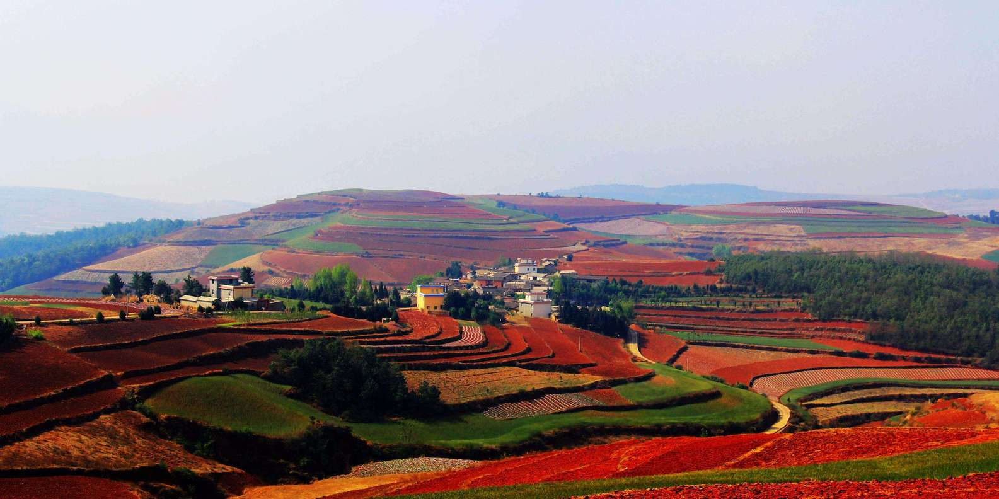
Дунчуань (东川红土) — район в провинции Юньнань на юго-западе Китая.
Известен своими красочными пейзажами. В народе земли известны как «потерянная
палитра Бога»: идущие террасами поля подобно радуге окрашены в красный,
оранжевый, зелёный, голубой, синий и фиолетовый. Содержащееся в местных землях
железо в результате окисления и отложения осадков почв окрашивает земли в различные оттенки
красного. Цветущие растения добавляют пейзажу красок. Площадь Красной земли Дунчуань
— около 100 квадратных миль. Как полагают, она является второй по площади в мире,
уступая только красной земле в Рио-де-Жанейро. Самым удачным временем для посещения
красных земель Дунчуань считаются периоды с сентября по декабрь, с января по
февраль и с мая по июнь. Из-за уникального местоположения и географических
условий в районе формируется мягкий и сухой климат.
|
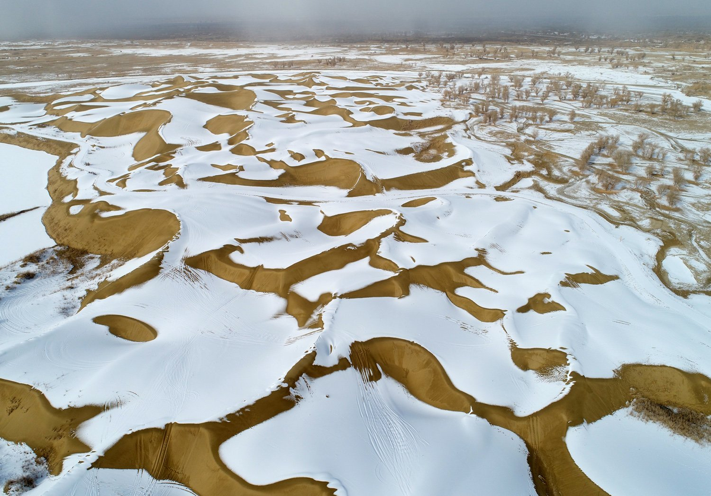
Такла-Макан — песчаная пустыня на западе Китая в
Синьцзян-Уйгурском автономном районе. Является одной из крупнейших песчаных пустынь
мира. Длина с запада на восток — свыше 1000 км, ширина — до 400 км. Площадь песков
— свыше 300 000 км². Поверхность пустыни равнинная, постепенно понижается к северу
и востоку. На западе над пустыней возвышаются одиночные кряжи высотой до 1664
м (гора Чонгтаг). Большая часть территории лишена растительного покрова.
Лишь в местах с близким залеганием грунтовых вод имеются редкие заросли тамариска,
селитрянки, тростника. Животный мир беден (редкие стада антилоп, зайцы, песчанки, тушканчики, полёвки).
Такла-Макан и прилегающие к ней территории — один из пяти крупнейших источников песчаной пыли в Китае.
|
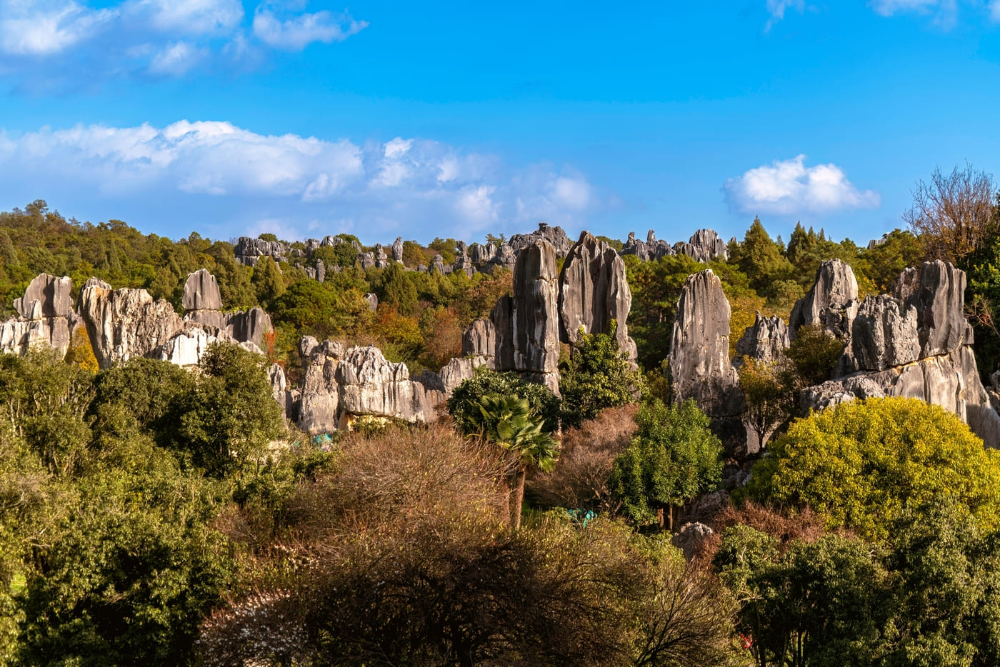
Шилинь — национальный парк на юго-западе Китая, представляющий собой геологический
феномен. Он был образован более 200 миллионов лет назад на дне древнего моря,
обмелевшего в результате тектонических сдвигов. Причудливые остроконечные скалы,
высота которых достигает 40 метров, будто бы вырастают из-под земли. Форма
известняковых изваяний напоминает окаменевшие деревья и пагоды, животных и птиц.
Национальный парк занимает площадь в 350 квадратных километров. Территория разделена
на семь зон, включающих в себя карстовые пики, луга, гроты, сады камней, пещеры,
озёра и водопады. В 2007 году два участка — каменный лес Найгу и деревня Суогейи
— были включены в список Всемирного наследия ЮНЕСКО.
|
| Большая панда | Малая панда | Золотистая курносая обезьяна |
|
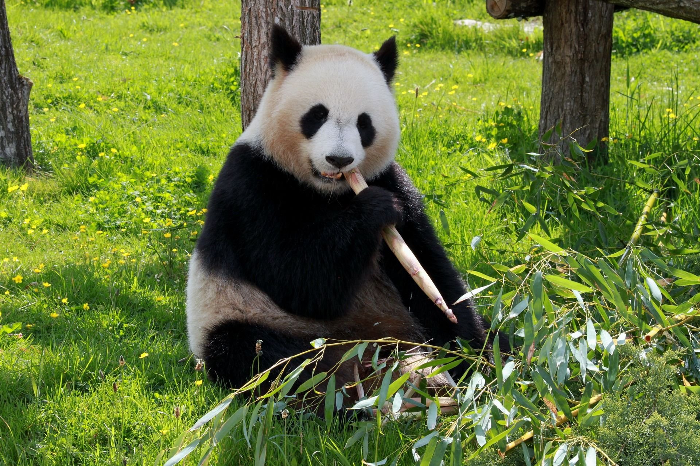
Панда в Китае — национальный символ. Она известна своей милой внешностью и
неповторимым характером. Панды обитают в южных регионах, где растут бамбуковые леса.
У них нет естественных врагов, они не нападают на других слабых животных и живут в
гармонии со многими видами. Образ панды совпадает с концепцией народа Китая,
которая заключается в мирном сосуществовании, отсутствии гегемонии и агрессии.
Панда играет роль символа благополучия и счастья в китайской культуре.
Её образ часто встречается на подарках, сувенирах и любых предметах
повседневного использования, которые продаются в Китае.
Панда является одной из важнейших достопримечательностей Китая и
привлекает огромное количество туристов. Китай вкладывает значительные средства
в исследование и защиту популяции панд, чтобы сохранить этот символ своей культуры.
|
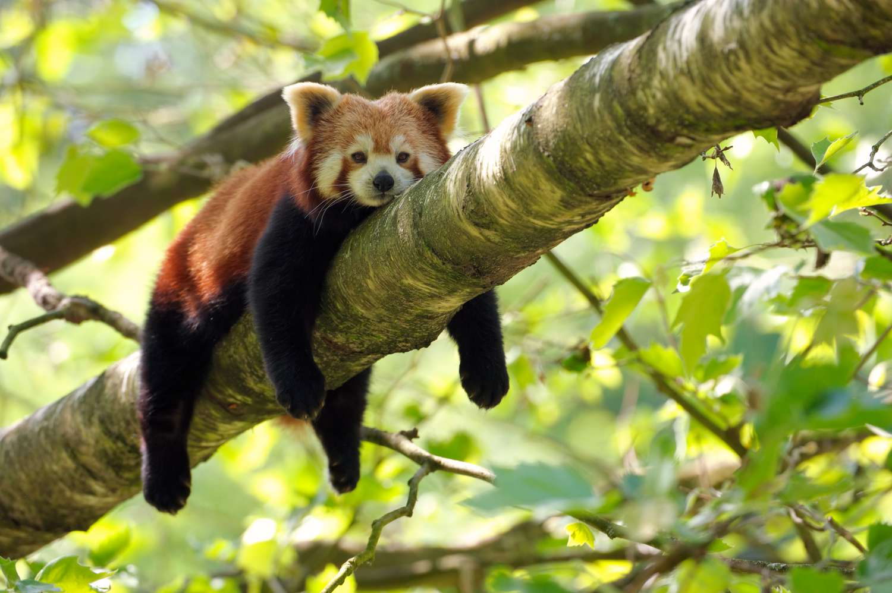
Малая панда (красная панда) — зверек размером с большую кошку.
Живёт в некоторых провинциях Китая (Юньнань, Сычуань),
а также на северо-востоке Индии, в Непале и Бутане.
Малая панда ведёт сумеречный образ жизни.
От хищников она прячется на деревьях, по земле ходит плохо.
95% её рациона составляют молодые листья и побеги бамбука.
Остальные 5% — это различные плоды, ягоды, грибы, птичьи яйца и даже мелкие грызуны.
Малая панда отличается миролюбивым характером и легко приживается в неволе.
Продолжительность жизни малой панды составляет 8–10 лет,
хотя отдельные особи доживают и до 15.
|
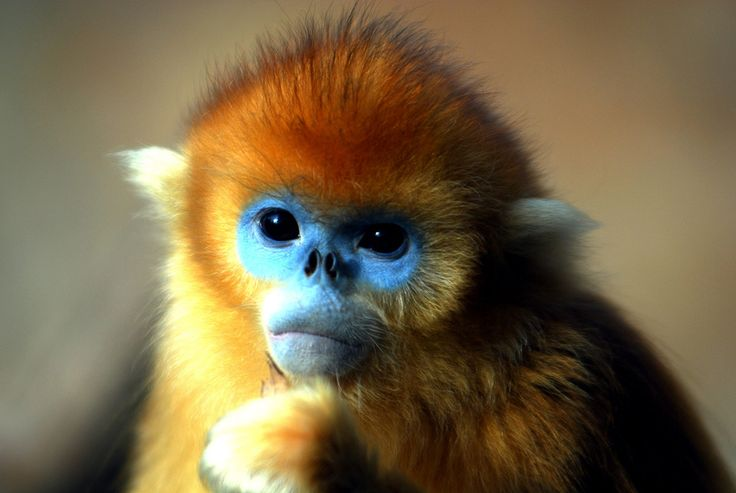
Золотистая курносая обезьяна (Pygathrix roxellana) — вид китайских обезьян
Отличаются необычным и ярким внешним видом: шерсть оранжево-золотистая, лицо синее,
а нос максимально курносый. Обитают в Южном и Центральном Китае, в
горной местности на высоте от полутора до трёх тысяч метров, за что
китайцы их прозвали «снежная обезьяна». Крупнейшие популяции находятся в
Национальном заповеднике Волун (Сычуань). Образ жизни: большую часть
жизни проводят на деревьях. При малейшей опасности залезают на их верхушки.
Питаются в основном древесной корой, сосновой хвоей, лишайниками.
Вид редок, находится под угрозой исчезновения, занесён в Красную книгу.
Китайские власти взяли этих животных под охрану и занесли в Красную книгу МСОП.
|
| Китайский речной дельфин | Китайский аллигатор | Богомол |
|
Китайский речной дельфин — светло-голубовато-серый дельфин с белым брюхом.
Самки крупнее самцов. Особенностью вида является узкий и очень длинный рострум,
напоминающий клюв журавля. Нижняя челюсть белая, на верхней челюсти белый край.
Имеет тридцать четыре сверху и тридцать шесть снизу пар зубов. Глаза дельфина
сильно редуцированы, расположены высоко на голове; зрение очень слабое.
Образ жизни дневной, ночью дельфины отдыхают на участках с медленным течением.
Ныряют всего на 10–20 секунд. По характеру речной дельфин скрытен и пуглив.
Питался в основном моллюсками и маленькой рыбешкой, угрями и сомами.
В 2007 году китайские речные дельфины официально были объявлены исчезнувшим видом.
|
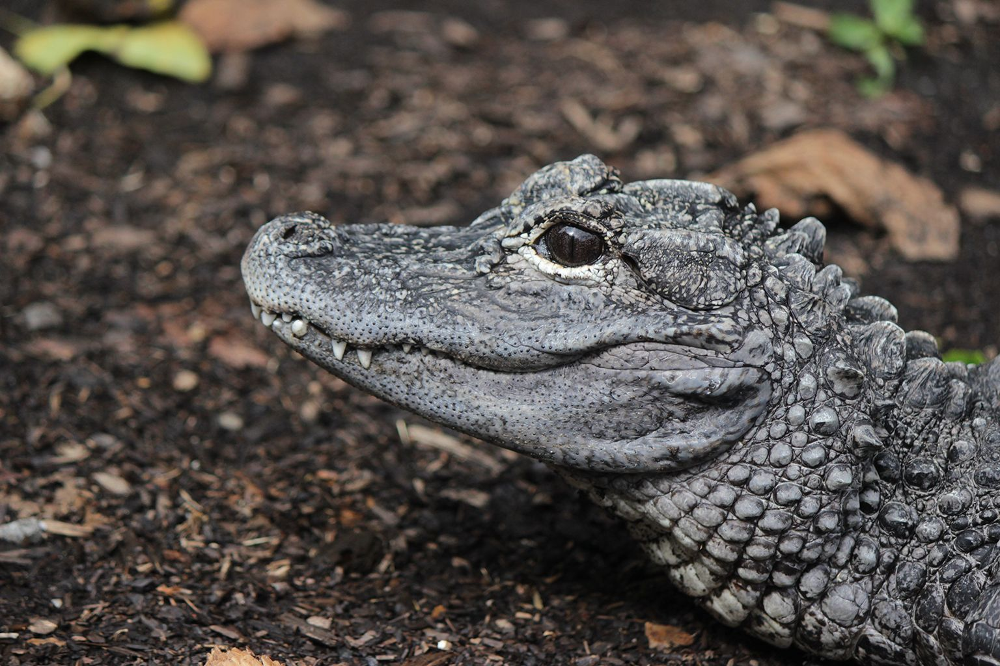
Китайский аллигатор — небольшой представитель семейства аллигаторов.Внешний вид:
длина тела не превышает 2 метров, средний вес составляет 2 килограмма. Окраска
желтовато-серая с отчётливыми чёрными пятнами на нижней челюсти. У молодых особей
вдоль тела имеются отчётливые жёлтые полосы, которые по мере роста постепенно исчезают
. Верхняя и нижняя часть тела покрыты костянистыми щитками, служащими для защиты.
У китайского аллигатора очень длинный мощный хвост, составляющий примерно половину
туловища. Ареал обитания: в настоящее время это животное обитает только в бассейне
реки Янцзы на востоке Китая. Аллигаторы отдают предпочтение медленно текущим или
стоячим водоёмам с пресной водой: болотам, озёрам, речкам. Образ жизни: активны
китайские аллигаторы в основном по ночам. Осенью (в конце октября), при
понижении температуры они впадают в спячку и спят до весны в норах, которые
вырывают сами. Питание: в качестве добычи для китайских аллигаторов подходят
различные рыбы, водяные улитки, ракообразные и моллюски. Социальная структура:
преимущественно одиночные рептилии. Продолжительность жизни: в неволе могут прожить
до 50 лет, в природе меньше. Китайский аллигатор не опасен для человека.
|
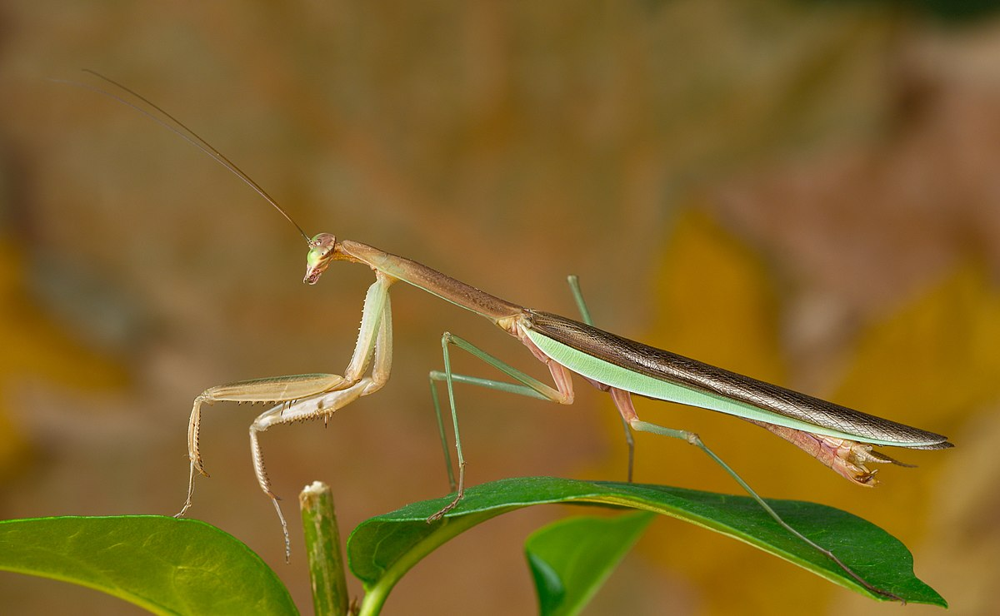
Китайский богомол (Tenodera sinensis) — крупный агрессивный богомол,
поедающий всё, что может поймать. Распространение: встречается в Китае, Японии,
Корее, Микронезии и Таиланде. Также случайно интродуцирован на Северо-Восток США и
юг Канады. Тело: стройное, длинное. У половозрелых самцов восемь сегментов брюшка,
у самок — шесть. Голова треугольная, может поворачиваться на 180°. Окрас: передняя
часть надкрыльев бурого цвета, а задняя — зелёного. Задние крылья чёрные,
прозрачные. Окраска самцов варьирует: есть зелёная, светло-коричневая и серая формы.
Между ногами есть жёлтое пятно. Размеры: длина тела взрослых самок достигает до
7,5–10 см, самцы немного мельче. Масса около 3 г. Питание: хищник-засадник,
охотящийся преимущественно на мелких насекомых. Самки могут ловить и поедать
мелких амфибий, ящериц и птиц (колибри). Образ жизни: ведёт ночной образ жизни.
Богомолы быстро бегают и хорошо прыгают. Самцы хорошо летают. Продолжительность
жизни: около 6–9 месяцев.
|
| Южно-китайский тигр | Гималайский медведь | Северо-китайский леопард |
|
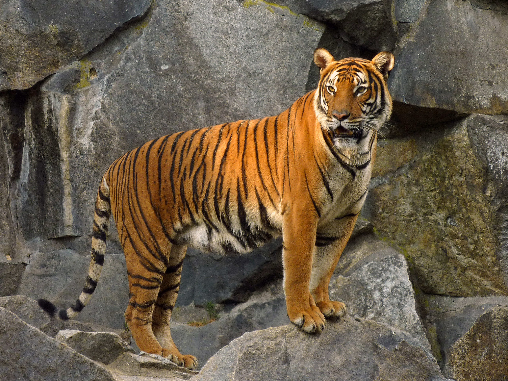
Южно-китайский тигр — самый малочисленный подвид тигров. С 1996 года находится
под угрозой вымирания. Некоторые факты о животном:
Длина тела и у самцов, и у самок — 2,2–2,6 метра.
Самцы весят от 127 до 177 кг, самки — от 100 до 118 кг.
Отличительная особенность — клыки длиной до 4 сантиметров.
Лапы очень мощные, удар достигает 500 килограмм.
Бегают очень быстро, на коротких участках развивая скорость до 56 км/ч.
Предпочитают охотиться на крупных копытных, часто убивают кабанов, изредка ловят
оленей, мунтжаков и серых лангуров.
Самка вынашивает детёнышей около трёх месяцев. Потомство появляется на свет зимой.
Южно-китайский тигр занесён в Красную книгу МСОП.
В мире осталось всего около 70 особей, большинство из них проживает в китайских
зоопарках.
|
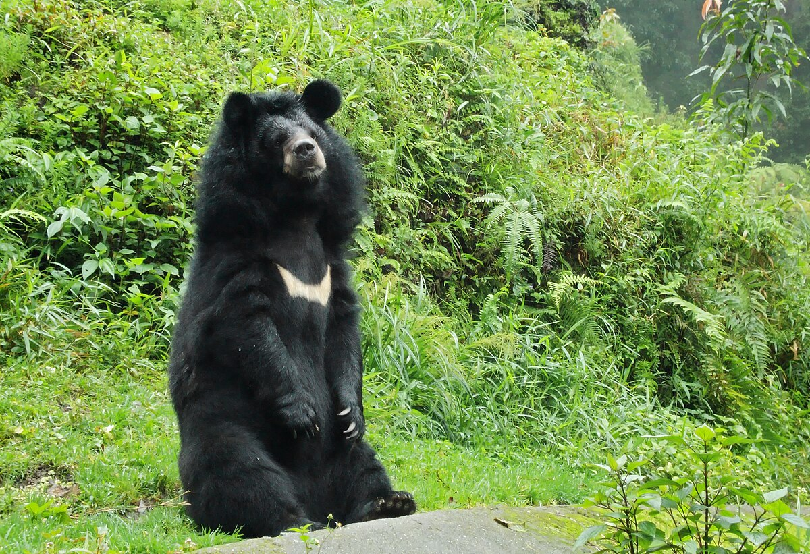
Гималайский медведь (лат. Ursus thibetanus) почти вдвое меньше бурого.
Отличается от него более стройным телосложением, тонкой остроносой мордой и
большими округлыми ушами. Шерсть гималайского медведя густая и пышная, особенно
длинная на плечах и шее. Чаще всего она чёрного цвета, однако иногда встречаются
бурые или рыжеватые особи. Независимо от окраса на груди обязательно присутствует
желтоватое V-образное пятно. Ареал обитания тянется от Ирана до Кореи и Японских
островов, проходя через Афганистан, Пакистан и Гималаи. В России встречается в
Приморском и Хабаровском крае. Основу питания составляет растительная пища:
лесные и кедровые орехи, жёлуди, сладкие ягоды, трава, листья деревьев и почки.
Из животных кормов гималайский медведь ест в основном насекомых — как взрослых,
так и личинки. Зимний период медведь проводит не в берлоге, а в дупле дерева,
расположенном не менее чем в пяти метрах над землёй. Если подходящего дупла
обнаружить не удалось, медведь отправляется на поиски другого естественного
укрытия.
Сезон размножения приходится на лето. Малыши рождаются крохотными, весом всего в 300–400 г. Вместе с матерью
малыши остаются 2–3 года, половой зрелости достигают около трёх лет, а их продолжительность жизни составляет
25 лет. 2
Некоторые подвиды гималайского медведя занесены в Красную книгу МСОП в статусе «уязвимый вид». 4
|
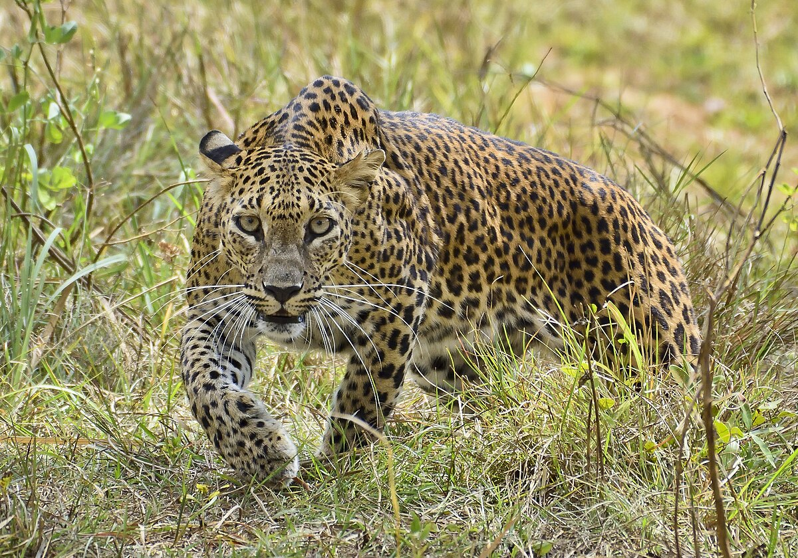
Китайский богомол (Tenodera sinensis) — крупный агрессивный богомол,
поедающий всё, что может поймать. Распространение: встречается в Китае, Японии,
Корее, Микронезии и Таиланде. Также случайно интродуцирован на Северо-Восток США и
юг Канады. Тело: стройное, длинное. У половозрелых самцов восемь сегментов брюшка,
у самок — шесть. Голова треугольная, может поворачиваться на 180°. Окрас: передняя
часть надкрыльев бурого цвета, а задняя — зелёного. Задние крылья чёрные,
прозрачные. Окраска самцов варьирует: есть зелёная, светло-коричневая и серая формы.
Между ногами есть жёлтое пятно. Размеры: длина тела взрослых самок достигает до
7,5–10 см, самцы немного мельче. Масса около 3 г. Питание: хищник-засадник,
охотящийся преимущественно на мелких насекомых. Самки могут ловить и поедать
мелких амфибий, ящериц и птиц (колибри). Образ жизни: ведёт ночной образ жизни.
Богомолы быстро бегают и хорошо прыгают. Самцы хорошо летают. Продолжительность
жизни: около 6–9 месяцев.
|
| Пион | Бегония | Азалия |
|
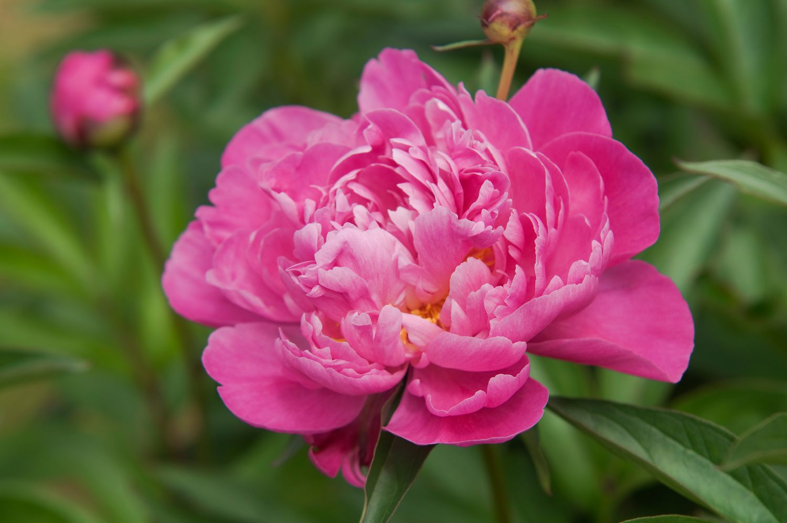
Китайский пион – это не просто цветок, это символ величия, процветания и благородства,
глубоко укоренившийся в китайской культуре и истории. В Поднебесной он известен как "Король Цветов" (花王,
huāwáng),
затмевая своей красотой даже легендарную китайскую розу. Это растение, источающее аромат весны, обладает не
только
эстетической привлекательностью, но и богатым символическим значением, а также целебными свойствами.
|
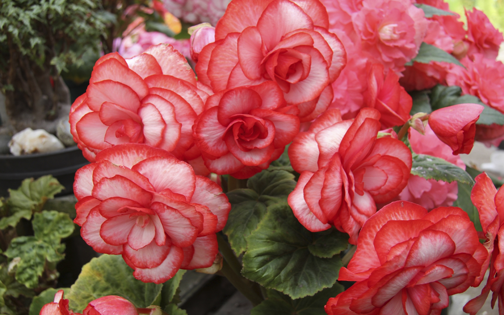
Китайская бегония, или Begonia chinensis, - это не просто комнатное растение,
это воплощение восточной элегантности, привносящее в дом атмосферу спокойствия и созерцательности,
характерную для китайских садов. Эта бегония, в отличие от своих более ярких и пестрых сородичей, пленяет
своей сдержанной красотой и изяществом линий, напоминая об искусстве каллиграфии и традиционной китайской
живописи.
|
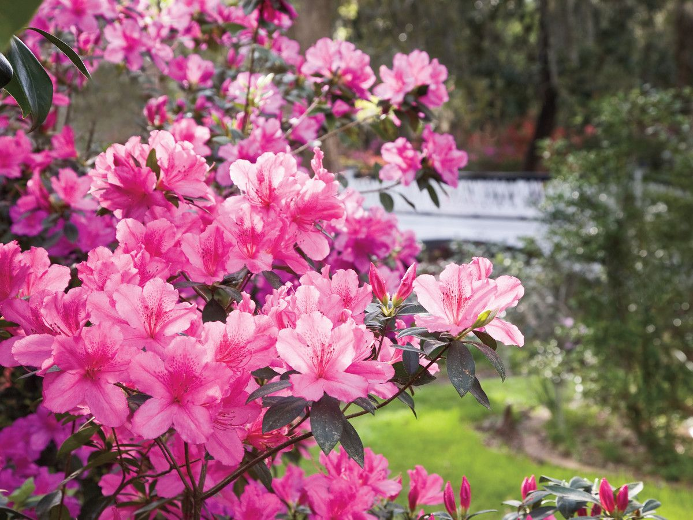
Китайская азалия – это не просто цветущий кустарник, это яркая вспышка восточной страсти,
раскрашивающая весенний сад в ослепительные тона. Более известная под научным названием Rhododendron simsii,
она является королевой азалий, покоряющей сердца садоводов своей пышностью, обильным цветением и невероятным
разнообразием окрасок. В культуре Китая, откуда она родом, азалия символизирует радость, нежность, любовь и
женскую красоту,
а её цветение возвещает о наступлении весны и пробуждении природы.
|
| Хризантема | Мэйхуа | Лотос |
|
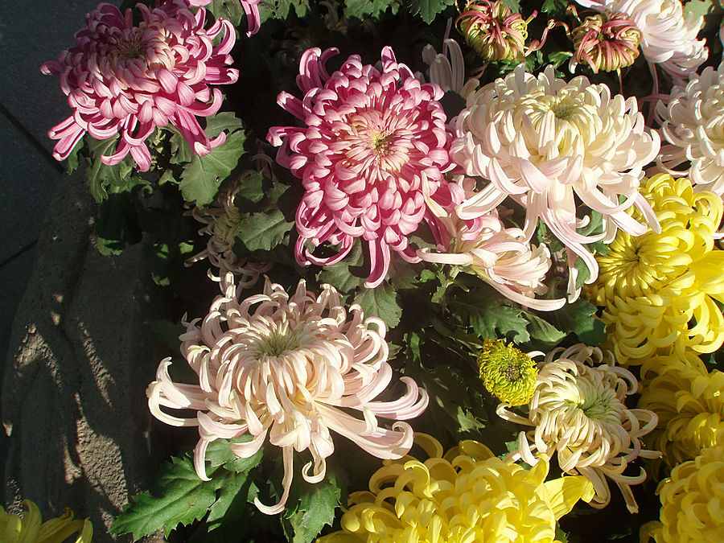
Китайская хризантема, с научным названием Chrysanthemum morifolium, занимает особое место в китайской
культуре
и искусстве. Это больше, чем просто цветок; это символ осени, долголетия, благородства, стойкости и даже
отшельничества,
глубоко переплетенный с историей и философией Поднебесной. В Китае хризантема считается одним из "четырех
благородных"
растений (四君子, Sì Jūnzǐ), наряду с орхидеей, бамбуком и сливой Мэйхуа, каждое из которых олицетворяет
определенные добродетели.
|
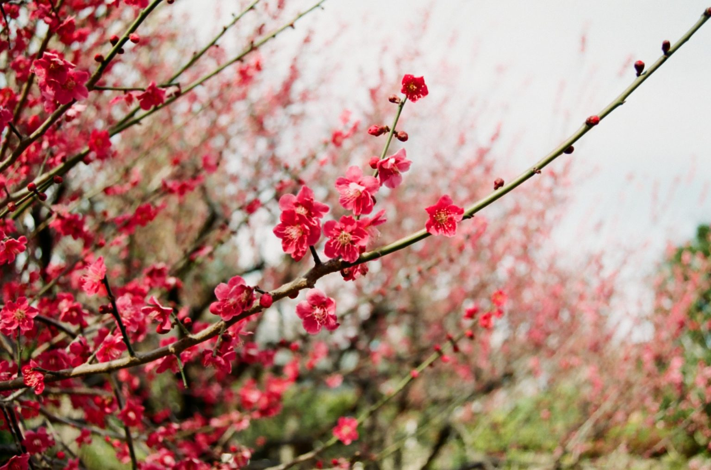
Мэйхуа (梅花, méihuā), также известная как китайская слива или японская абрикосовая слива (Prunus mume),
занимает особое место в китайской культуре, искусстве и философии. Это не просто красивый цветок, а символ
стойкости,
надежды, чистоты и благородства, олицетворяющий дух выживания и возрождения. Мэйхуа является одним из
"четырех благородных"
растений (四君子, Sì Jūnzǐ), наряду с орхидеей, бамбуком и хризантемой, каждое из которых представляет
определенные добродетели.
|
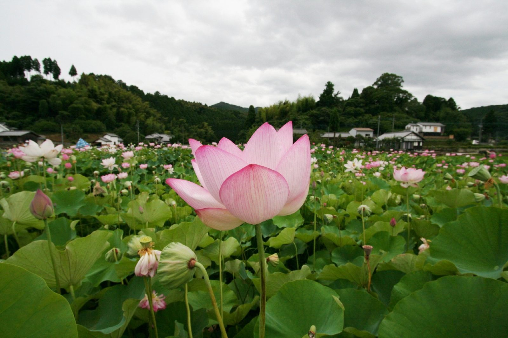
Китайский лотос, известный также как Nelumbo nucifera, занимает особое место в культуре Китая, а также во
многих других
странах Востока. Это не просто красивое водное растение, а священный символ, олицетворяющий чистоту,
духовное просветление,
возрождение и гармонию. Его изображение можно встретить в искусстве, архитектуре, литературе и религиозных
практиках, где лотос
несет глубокий философский и символический смысл.
|
| Магнолия | гинкго | Китайская роза |
|
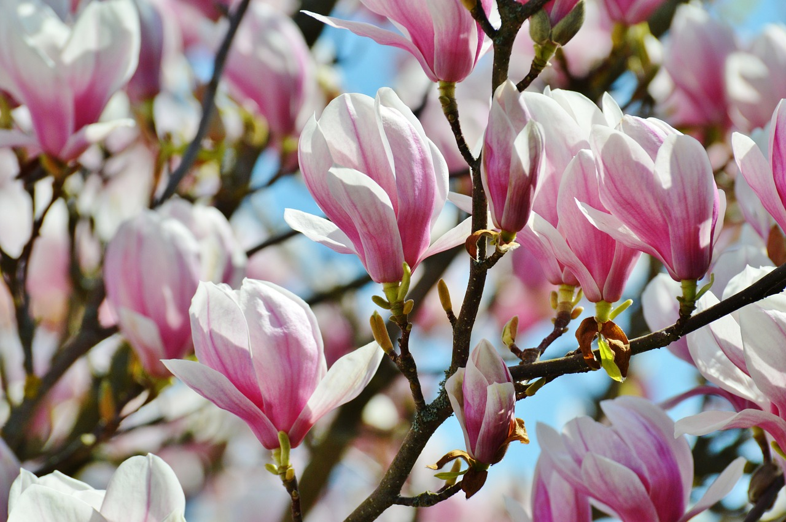
Китайская магнолия, или Magnolia sinensis, представляет собой древесное растение, окруженное аурой
элегантности и
утонченности, являясь одним из самых почитаемых цветущих деревьев в Китае. Она ценится не только за свою
потрясающую
красоту, но и за свой изысканный аромат и символическое значение, связанное с весной, обновлением и
чистотой. В отличие
от более распространенных гибридных магнолий, китайская магнолия обладает неповторимым шармом и
деликатностью, отражающими дух
восточной эстетики.
|
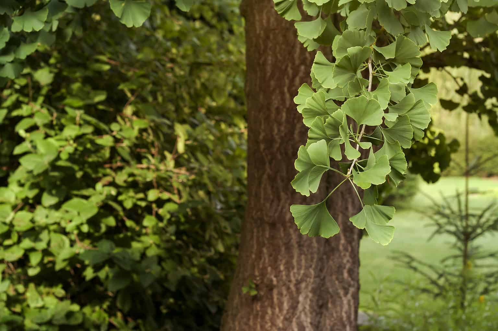
Гинкго билоба (Ginkgo biloba), часто называемый "живым ископаемым", - это уникальное дерево, занимающее
особое место
в истории и культуре Китая. Это не просто растение, это символ долголетия, стойкости, мудрости и надежды,
переживший
динозавров и ледниковые периоды. В Китае гинкго почитается как священное дерево, его часто можно встретить
возле храмов
и монастырей, где он символизирует просветление и связь с прошлым.
|
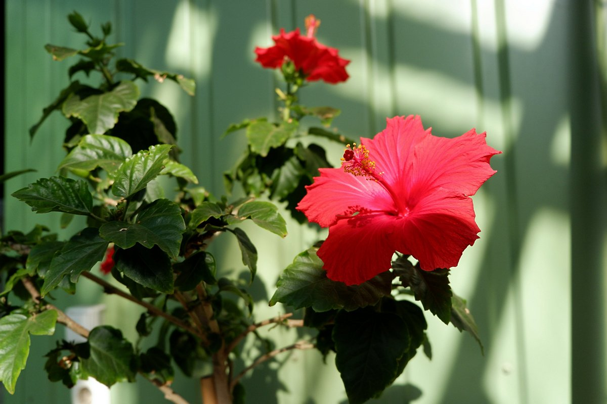
"Китайская роза" – это общее название, которое чаще всего относится к Hibiscus rosa-sinensis, известному
также как
гибискус китайский, суданская роза или розан китайский. Хотя это растение не является настоящей розой (из
рода Rosa),
его яркие и эффектные цветы действительно напоминают розы своей формой и красотой, что и послужило причиной
такого названия.
В Китае гибискус символизирует славу, богатство, процветание и страстную любовь, а его цветение считается
благоприятным знаком.
|